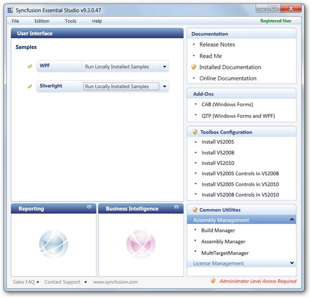
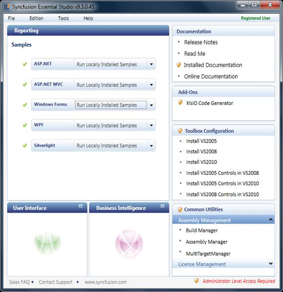
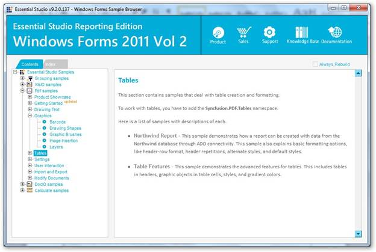

To view Layers samples:
1. Open the Syncfusion Essential Studio Dashboard.
The Essential Studio Enterprise Edition window is displayed.

Essential Studio Dashboard
The User Interface edition panel is displayed by default.
2. Select Reporting and click the drop-down button of any platform e.g. Windows Forms, listed below Samples. The following options are displayed when clicking on the drop-down. You can view the samples in the following three ways:
· Run Locally Installed Samples – to view the locally installed XlsIO samples using the sample browser
· Run Online Samples – to view the online XlsIO samples.
· Explore Samples – to locate the XlsIO samples on the disk

Syncfusion Essential Studio Dashboard
3. Choose Run Locally Installed Samples.
The Windows Forms Sample Browser displays.

Windows Forms Sample Browser
4. Go to PDF samples -> Graphics -> Layers.
For accessing ASP.NET samples:
· Go to ASP.NET -> PDF samples -> Graphics -> Layers.
For accessing ASP.NET MVC samples:
· Go to ASP.NET MVC -> PDF samples -> Graphics -> Layers.
For accessing WPF samples:
· Go to WPF -> PDF samples -> Graphics -> Layers.
For accessing Silverlight samples:
· Go to Silverlight -> PDF samples -> Graphics -> Layers.